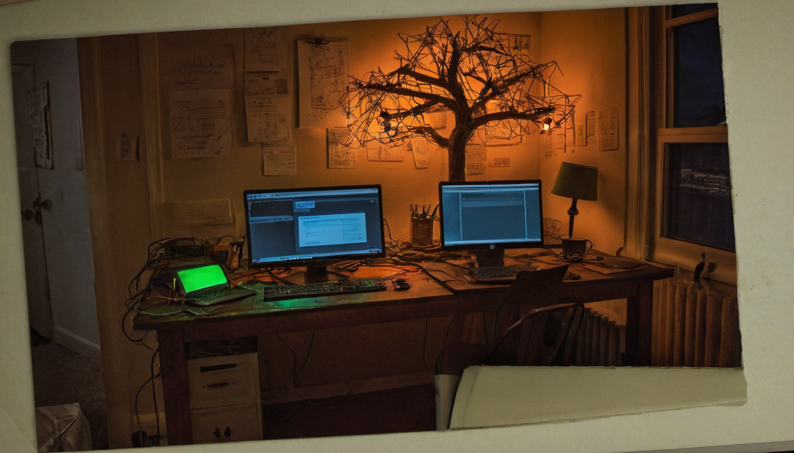
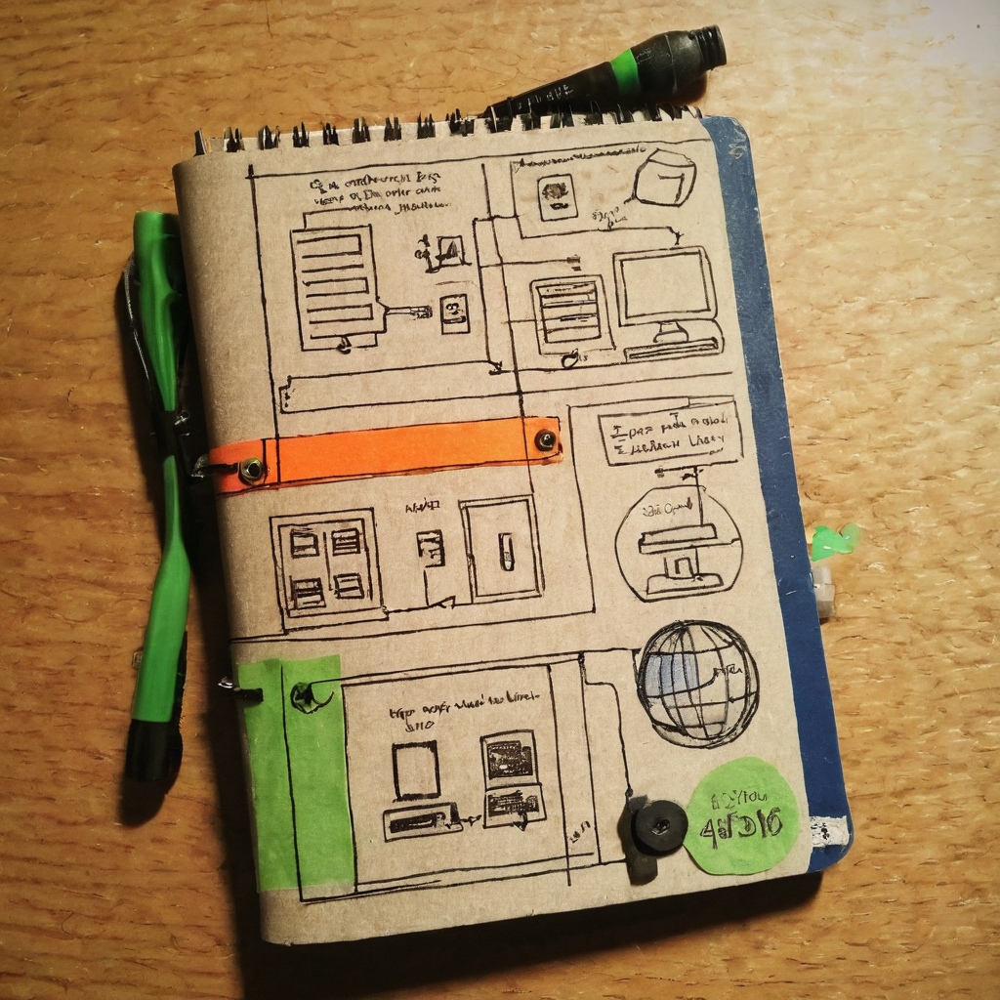

I posted The Orchard out into the world before it was ready, on purpose. That is how I want to build this one. No polished trailer, no fake countdown, just the actual thing in its rough state and an open invitation to poke at it.
The Orchard is a Fiend Studios project, and right now it is pre-alpha. In the post I laid out what already works: you can flash an ESP32 or ESP32-S3 board directly in your browser, no toolchain, no drivers, no command line setup. Once a device is flashed, you claim it as a Tree using an Orchard Pass tied to a Chia wallet. After that, the Tree shows up on a View page, and there is an early globe proof of concept where you can see live Trees placed out in the world. I also asked people to expect rough edges and to actually tell me what breaks.

The part I keep coming back to is the flashing step. Getting firmware onto an ESP32 has traditionally meant installing a toolchain, fighting drivers, and hoping the right board profile is selected. Doing that in the browser removes a real barrier for anyone who is curious but not already deep into embedded dev. That is the kind of small friction removal that decides whether a project stays a hobbyist niche or actually gets picked up by more people.
The second part is the wallet tie-in. Using a Chia wallet and an Orchard Pass to claim a physical device is a light-touch way of giving a piece of hardware an owner and an identity on a network, without pretending it is some huge infrastructure play yet. It is a small, honest first step toward the kind of pattern DePIN projects are reaching for: real devices, owned by real people, visible on a shared map.
What it does today: browser based ESP32/ESP32-S3 flashing, Tree claiming through an Orchard Pass and Chia wallet, a View page, and an early globe PoC showing live Trees.
Who it helps: people who want to try flashing a device without setting up a full embedded dev environment, and early Chia community members curious about hardware tied to wallets.
What problem it solves: the friction of getting firmware onto a board. That alone is worth something even before you get to the wallet or the map side of things.
What still needs work: it is pre-alpha, so I expect bugs in the flashing flow, claim flow, and the globe view. I have not made any claims yet about scale, device types beyond ESP32/ESP32-S3, or what an Orchard Pass will mean long term. That part is still forming.
What I would test first: grab a spare ESP32-S3, run it through the browser flash, claim it, and see if it actually shows up correctly on the View page and the globe. That loop, start to finish, is the real test of whether this is usable yet.
I like building this way. Putting a rough thing in front of people early means the feedback is honest, not polite. The browser flashing piece is the part I am proudest of right now, because it is the kind of unglamorous work that makes everything downstream easier. The Chia wallet and Orchard Pass claiming is still early, and I am genuinely curious how people use it once more Trees are out there. I do not have grand numbers or a roadmap to hand over today. What I have is a working pre-alpha and an open door for people to tell me where it breaks.
I will be watching how the claim flow holds up once more people try it on different hardware, and whether the globe view stays useful as more Trees get added. No promises on timelines yet, this is still pre-alpha and I would rather under-promise than hype something that is not fully baked.
Source: X post by @FiendStudios, https://x.com/i/web/status/2077552766352777591, retrieved on 2026-07-16. No external references were included in the original post.